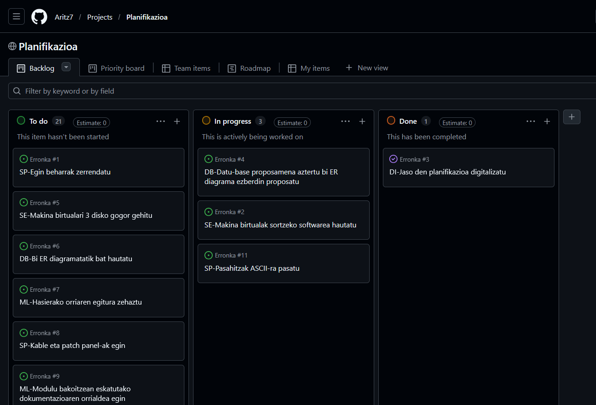
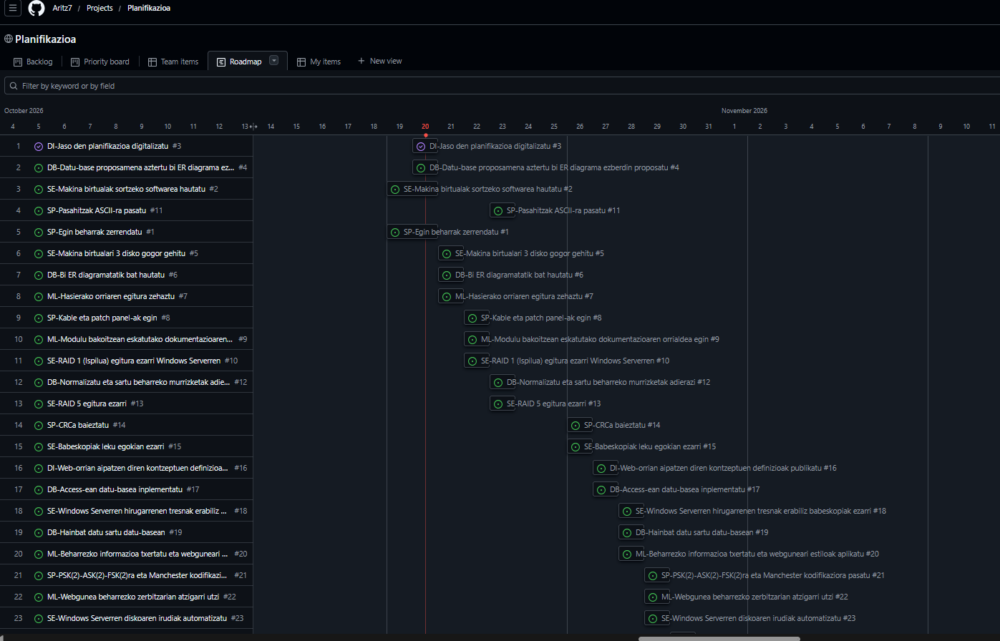

Digitalizazioa - Proiektuaren Dokumentazioa
1. Planifikazioaren Digitalizazioa
Proiektu honen lehenengo urratsetan, lan-karga eta atazak modu eraginkorrean kudeatzeko, hasierako planifikazioa digitalizatu dugu.
Horretarako, GitHub Projects tresna erabili dugu tablero birtual bat sortuz.
Tablero honetan, ataza bakoitza bere egoeraren arabera
(To do, In progress, Done) eta dagokion asignaturaren arabera antolatu da.


2. Digitalizazioaren Oinarrizko Kontzeptuak
2.1. Digitalizazioa (Digitalización)
Digitalizazioa prozesu, produktu eta zerbitzu tradizionalak eraldatzeko prozesua da, teknologia digitalak erabiliz.
Ez da soilik zereginak informatizatzea, baizik eta erakunde baten funtzionamendua, ekoizpena eta erabakiak hartzeko modua birdefinitzea.
- Abantailak: Eraginkortasuna eta zehaztasuna hobetzen ditu, lana arintzen du, komunikazioa azkartzen du eta negozio-aukera berriak sortzen ditu.
- Eragina enpresan: Lanpostu berriak sortzea, lan egiteko moduak eta komunikazioa aldatzea, eta erabakiak denbora errealean hartzea ahalbidetzen du.
2.2. IT eta OT Teknologiak
Eraldaketa digitalean bi teknologia-talde nagusi bereizten dira:
- IT (Informazioaren Teknologiak): Datuak prozesatzera eta informazioa kudeatzera bideratutako tresna digitalak dira. Enpresaren "garuna" bezalakoak dira (softwareak, datu-baseak, sareak).
- OT (Operazio Teknologiak): Prozesu fisikoak kontrolatu eta automatizatzen dituzten gailuak dira. Enpresaren "besoak eta hankak" dira (sentsoreak, beso robotikoak, PLCak, SCADA sistemak).
Bi ingurune hauen arteko integrazioak (IT/OT konbergentzia) mantentze prediktiboa, ekoizpen malgua eta denbora errealeko kontrola hobetzea lortzen du.
2.3. Teknologia Gaitzaile Digitalak (TGD / THD)
Eraldaketa digitala ahalbidetzen duten eta gaitasun zein negozio-eredu berriak garatzen laguntzen duten puntako teknologiak dira.
TGD nagusiak:
- Gauzen Interneta (IoT): Gailu fisikoak Internetera konektatzea.
- Adimen Artifiziala (IA): Makinek ikasi eta erabakiak hartzeko gaitasuna.
- Big Data: Datu-bolumen handien analisia.
- Cloud Computing: Konputazioa eta biltegiratzea hodeian.
- Zibersegurtasuna: Sistemak eta datuak mehatxuetatik babestea.
- Errealitate Birtuala eta Areagotua (VR/AR): Esperientzia murgiltzaileak.
- Beste batzuk: Blockchain, 5G, Robotika, 3D Inprimaketa eta Biometria.
Ezaugarri nagusiak: Moldakortasuna, automatizazioa, interkonexioa, eskalagarritasuna eta eraginkortasunaren hobekuntza.
2.4. Cloudean Oinarritutako Sistemak (Cloud Computing)
Cloud computing-a Internet bidez eskuragarri dauden baliabide informatikoak (zerbitzariak, biltegiratzea, aplikazioak) urrunetik erabiltzeko eredua da, azpiegitura fisiko lokal baten mende egon gabe.
Ezaugarriak eta Mailak:
- Eredu Tradizionala vs Hodeia: Eredu tradizionalean datuak eta programak gailu lokalean instalatzen eta gordetzen dira; hodeian, berriz,
edozein gailutatik atzitu daitezke Internet bidez, biltegiratze lokala muga izan gabe. - Hodei motak: Publikoa, Pribatua eta Hibridoa.
- Zerbitzu Ereduak (Kontenedoreak):
- IaaS (Infrastructure as a Service): Azpiegitura birtuala alokatzea (adib. Azure VM, Amazon EC2).
- PaaS (Platform as a Service): Aplikazioak garatzeko plataforma (adib. Google App Engine).
- SaaS (Software as a Service): Erabiltzeko prest dauden software-aplikazioak (adib. Google Workspace, Microsoft 365).
- Eboluzioa (Fog / Edge / Mist Computing): Hodeiko latentzia eta banda-zabalera hobetzeko, prozesamendua datu-iturritik gertuago egiteko garatutako teknologiak.